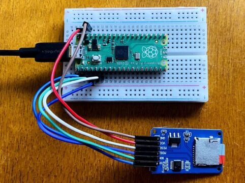

Adaptador MicroSD Card
Diaz Garduño Alan Fernando
No. Control: 18210990
Materia: Sistemas Programables
Prof. Rene Solis Reyes
Principales Uso
El módulo de tarjeta SD es especialmente útil para proyectos que ocupen consultar o guardatos datos en la misma tarjeta SD.
Características
- Alimentacion de 3.3v y 5v
- Incluye buffer adaptador de niveles lógicos
- Cuenta con todos los pines SPI: MOSI, MISO, SCK, CS
- Compatible con cualquier placa (Arduino, microcontrolador y tarjeta de desarrollo)
Esquema de conexión
| Pico | Modulo/Adaptador |
|---|---|
| GND | GND |
| 5V | Vcc |
| D12 | MISO |
| D11 | MOSI |
| D13 | SCK |
| D9 | CS |

Esquema de conexión sin modulo
| Pin adaptador sd | SPI | Pico W |
|---|---|---|
| 1 | CS | Pin 17 (GP13) |
| 2 | MOSI | Pin 20 (GP15) |
| 3 | GND | Pin 18 (GND) |
| 4 | 3.3V | Pin 36 (3V3 OUT) |
| 5 | SCK | Pin 19 (GP14) |
| 6 | GND | Pin 18 (GND) |
| 7 | MISO | Pin 16 (GP12) |
| 8 | --- | --- |
| 9 | --- | --- |

Conclución
El adaptador microSD para la Raspberry Pi Pico W es una herramienta fundamental que expande su capacidad de almacenamiento, lo que facilita el desarrollo de proyectos al permitir el almacenamiento de datos y programas de manera conveniente.
Referencias